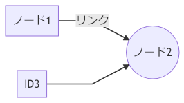

mermaid.js・mermaid.cli を使って UML 図を描く
昨日の PlantUML (node-plantuml) に引き続き、Node.js 環境で UML 図を描くツールを試してみる。次は mermaid.js と、それをコマンドラインで実行できる mermaid.cli というツールを使ってみる。
今回も以下のリポジトリに素振り環境を作ってみたので、コチラもよかったらご覧いただきたい。
目次
mermaid.cli のインストール
まずは mermaid.cli をプロジェクトローカルにインストールする。
$ npm install mermaid.cli --save
そして npm run で mermaid を使えるよう、package.json の npm-scripts に以下のスクリプトを追加しておく。
{
"scripts": {
"mmdc": "mmdc"
}
}
これで準備は OK。
mermaid 用のファイルを用意する
次に、mermaid で扱うテキストファイルを用意する。ネットで拾った適当なスクリプトを利用する。
graph LR
ID1[ノード1] -- リンク --> ID2((ノード2))
ID3 --> ID2
これを example-mermaid.md といった名前で保存する。エンコーディングは UTF-8 (BOM なし) で問題なし。
mermaid を使って UML 図に変換する
インプットとなるファイルを用意したので、mermaid.cli を使って PNG 形式の図に書き出してみる。
$ npm run mmdc -- --input example-mermaid.md --output output-mermaid.png
--input は -i、--output は -o と省略可能。これで output-mermaid.png という PNG ファイルが書き出せる。

ついでにコレを npm-scripts に追加しておこう。
{
"scripts": {
"mmdc": "mmdc",
"generate-mermaid": "mmdc --input example-mermaid.md --output output-mermaid.png"
}
}
これで $ npm run generate-mermaid と実行すれば図が書き出せるようになった。
以上
PlantUML を使うか mermaid.js を使うか、もう少しそれぞれを使ってみて、使いどきを見極めてみたい。